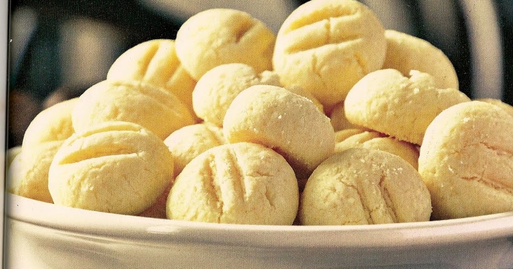

Doces · Biscoitos
Sequilhos de coco

Ingredientes
- Manteiga para untar
- Farinha de trigo para polvilhar
- 1 1/3 xícara de farinha de trigo
- 3/4 xícara de açúcar
- 1 colher (chá) de fermento em pó
- 1 pacote pequeno (50 g) de coco ralado
- 1 pitada de sal
- 3/4 xícara de manteiga
- 1 gema
Modo de preparo
- Preaqueça o forno em temperatura média (180 °C). Unte e enfarinhe duas assadeiras grandes.
- Misture os ingredientes secos. Faça uma cova, coloque manteiga em pedacinhos e a gema; incorpore com a ponta dos dedos até massa ligada.
- Faça cordõezinhos, corte como nhoque e marque com garfo.
- Asse 15 minutos, trocando as assadeiras de lugar na metade do tempo. Deixe esfriar e congele.
Observação: Congelamento: saco plástico sem ar, etiquetado. Descongelamento: temperatura ambiente por cerca de 1 hora.